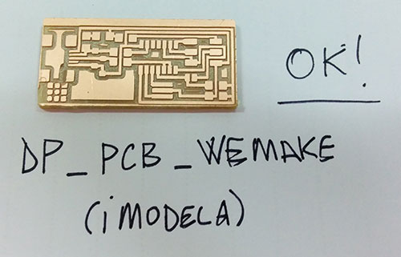

Make the FabISP in-circuit programmer
First time in my life approaching electronics. So, I am starting from zero. I started to prepare the PCB. First of all I installed Oracle VirtualBox on my Mac, then I downloaded and installed the latest version of Ubuntu. After I installed Fab Modules on Ubuntu dowloading all the instructions to materialize my first PCB. At We Make Fab Lab I cut a piece of material to prepare the PCB. In parallel a PC has been connected to the Micro Milling Machine Imodela Roland DG, the machine we will use to create the base of PCB. One week to to set-up the IModela waiting all the components from DigiKey. I partially worked in team in order to better understand how to create the PCB, set-up and use a Roland IModela. It has been very difficult set-up this micro-machine and the parameters for milling the board. To set-up Imodela we use two computers:
This is the process we adopt (Me, Costantino and Sabina at WeMake) to create the board:
It has been a fine and complex experience. I learnt to set-up a micro-milling machine taking confidence with this kind of technology. This first set of acquired knowledge will encourage me to use the bigger milling machine and learning more about CAM software.
I start to learn the basic principles of soldering working on a damaged workpiece. So this is the process I follow. An old electronic engineer, a member of We Make Fab Lab (Gianni) teaches and supports me to complete my task, expliaining to me all the secret of (micro)soldering. First of all, I used a rubber to clean my PCB. Secondly, I use a liquid to facilitate the next phase of soldering. Thirdly, I started to solder all components following this sequence (honestly: it is very difficult for me remember all their names and functions):